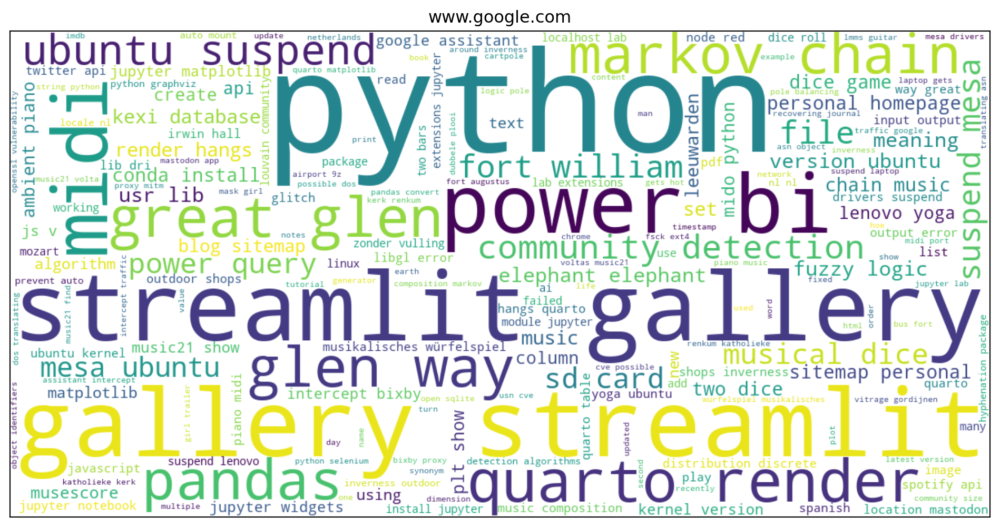
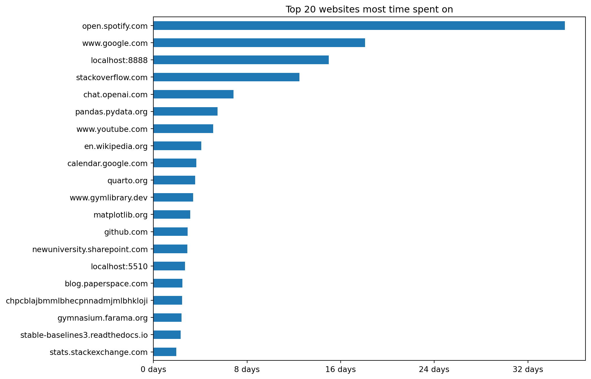
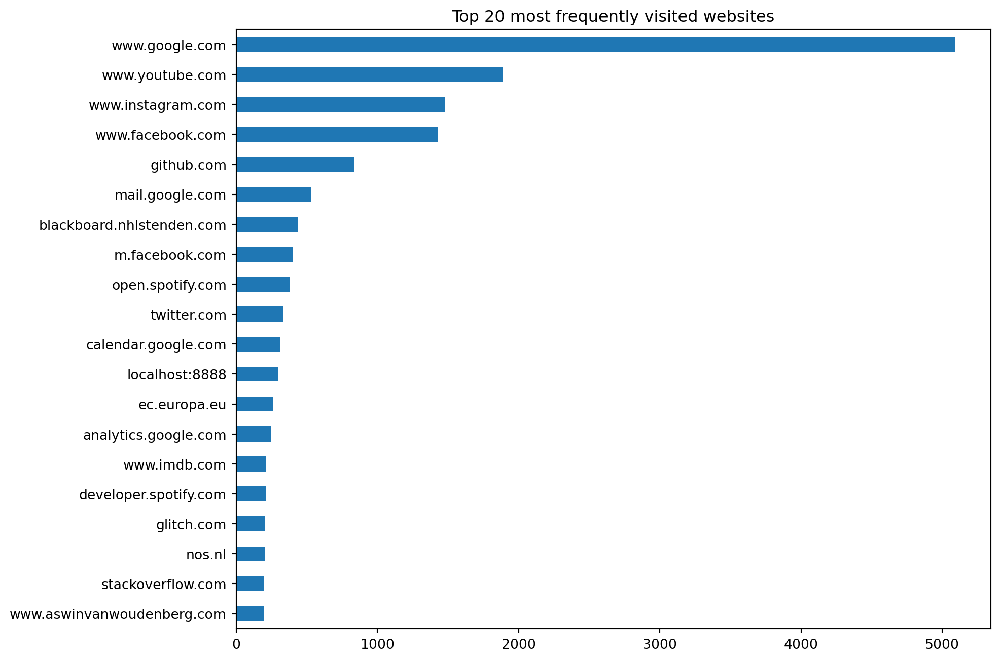
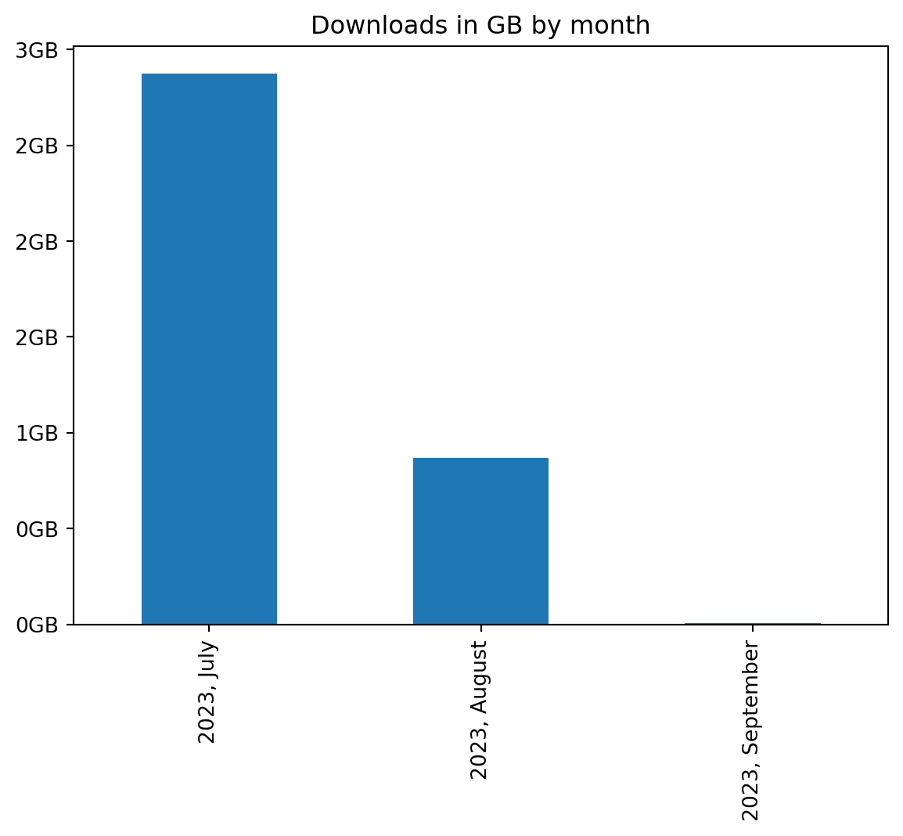
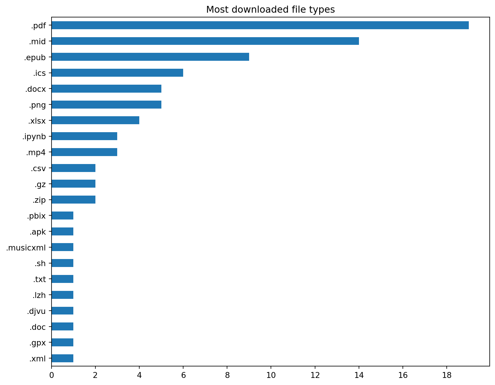

import os
import sqlite3
import time
import datetime
import tzlocal
import math
import calendar
import pandas as pd
import numpy as np
import ipywidgets as widgets
import matplotlib.pyplot as plt
from matplotlib.ticker import FixedLocator, MaxNLocator
%matplotlib inline
from IPython.display import display, HTML
from urllib.parse import urlparse
from pathlib import Path
from wordcloud import WordCloud
from ipywidgets import interactWe’ve all been there - you sit down at your computer with the intention of getting work done, but suddenly find yourself lost in a rabbit hole of endless browsing. But what exactly are you doing when you’re procrastinating online?
I decided to look into my own browser history to get better insight into my browsing behavior and hopefully build better habits.
Chrome, which is the browser I use, stores its history (like most browsers) in an SQLite database. This database can be queried from Python using the sqlite3 package. I use pandas for data manipulation and matplotlib and wordcloud to create visualizations.
I wanted to answer questions, such as:
- What are my search queries?
- Which websites do I visit most frequently?
- At what times am I most active online?
- What kind of content do I download the most?
- Where do I download most content from?
Read on if you want to see my embarrasing browsing habits being visualized or want to learn how to analyze your own data.
Importing libraries
We’ll start by importing sqlite3, pandas, matplotlib and some other packages.
Reading database tables
On Linux, the Chrome history database is stored in the ~/.config/google-chrome/Default/History file. If you’re on a different OS, or are using multiple profiles, you will have to update this path.
db_path = os.path.expanduser("~/.config/google-chrome/Default/History")We connect to this database using the sqlite3 driver. To open this file read-only, immutable needs to be set to 1. This not only prevents accidental changes, but also allows reading the database file when it’s locked by the Chrome browser.
con = sqlite3.connect(f"file:{db_path}?immutable=1", uri=True)Let’s look at what tables are stored in this database file.
(pd.read_sql_query("SELECT name FROM sqlite_master WHERE type='table';", con)
.sort_values('name')
.style.hide(axis='index'))| name |
|---|
| cluster_keywords |
| cluster_visit_duplicates |
| clusters |
| clusters_and_visits |
| content_annotations |
| context_annotations |
| downloads |
| downloads_slices |
| downloads_url_chains |
| history_sync_metadata |
| keyword_search_terms |
| meta |
| segment_usage |
| segments |
| sqlite_sequence |
| typed_url_sync_metadata |
| urls |
| visit_source |
| visits |
We’ll read in tables using Pandas and explore their contents. There are quite a few tables, but I’ll only focus on a few of them.
downloads = pd.read_sql_query("SELECT * FROM downloads;", con)
keyword_search_terms = pd.read_sql_query("SELECT * FROM keyword_search_terms;", con)
urls = pd.read_sql_query("SELECT * FROM urls;", con)
visits = pd.read_sql_query("SELECT * FROM visits;", con)After reading in the data we can close the database connection.
con.close()There’s a limit to how much history is saved to these tables. We won’t be able to go years back unless we periodically backup the database. I won’t do that in this post though.
Common search terms
A browser session often starts with a (Google) search. Let’s visualize what common search terms I am using. I’ll do this using a word cloud.
The Chrome history database contains a keyword_search_terms table that records keywords that have been entered into search boxes. It has the following structure:
keyword_search_terms.info()<class 'pandas.core.frame.DataFrame'>
RangeIndex: 4832 entries, 0 to 4831
Data columns (total 4 columns):
# Column Non-Null Count Dtype
--- ------ -------------- -----
0 keyword_id 4832 non-null int64
1 url_id 4832 non-null int64
2 term 4832 non-null object
3 normalized_term 4832 non-null object
dtypes: int64(2), object(2)
memory usage: 151.1+ KBThe url_id is a foreign key that links to records in the urls table. The urls table has the following structure:
urls.info()<class 'pandas.core.frame.DataFrame'>
RangeIndex: 11645 entries, 0 to 11644
Data columns (total 7 columns):
# Column Non-Null Count Dtype
--- ------ -------------- -----
0 id 11645 non-null int64
1 url 11645 non-null object
2 title 11645 non-null object
3 visit_count 11645 non-null int64
4 typed_count 11645 non-null int64
5 last_visit_time 11645 non-null int64
6 hidden 11645 non-null int64
dtypes: int64(5), object(2)
memory usage: 637.0+ KBThe urls table contains the actual URL and some other attributes. We could join the keyword_search_terms and urls tables using SQL, but here I’ll use Pandas’ merge method instead.
keyword_search_terms_urls = pd.merge(left=keyword_search_terms, right=urls, left_on='url_id', right_on='id')I want to be able to visualize what search terms I use per search box seperately. So I want to see which keywords I entered on Google, which ones I entered on YouTube, which ones on Bing, etc. I order to do this I’ll extract the network location from the URL. This becomes a new column in the dataframe called netloc.
keyword_search_terms_urls['netloc'] = keyword_search_terms_urls.url.map(lambda r: urlparse(r).netloc)I’ll use an dropdown widget to select the website I searched on and plot the word cloud.
@interact(netloc=widgets.Dropdown(options=keyword_search_terms_urls.netloc.unique(), description='Website:'))
def search_wordcloud(netloc):
# Join all keywords into one lengthy string
keywords = ' '.join(keyword_search_terms_urls.query('netloc == @netloc').normalized_term)
width, height = 1200, 600 # Size of the word cloud
px = 1/plt.rcParams['figure.dpi'] # pixel in inches
fig, ax = plt.subplots(figsize=(width*px, height*px), subplot_kw={'xticks': [], 'yticks': []})
wordcloud = WordCloud(background_color="white", width=width, height=height).generate_from_text(keywords)
ax.set_title(netloc)
ax.imshow(wordcloud, interpolation='bilinear', aspect='auto')
plt.show()
Most searches, at least the ones on Google seem to be data science related. I recently hiked the Great Glen Way in Scotland so you can see some searches related to that.
Most visited websites
Let’s see what websites I visit most. I’ll look at both how much time I spend on these websites and how frequently I visit them.
Most visited websites by time spent
The visits table has the following structure:
visits.info()<class 'pandas.core.frame.DataFrame'>
RangeIndex: 23181 entries, 0 to 23180
Data columns (total 15 columns):
# Column Non-Null Count Dtype
--- ------ -------------- -----
0 id 23181 non-null int64
1 url 23181 non-null int64
2 visit_time 23181 non-null int64
3 from_visit 23181 non-null int64
4 transition 23181 non-null int64
5 segment_id 23181 non-null int64
6 visit_duration 23181 non-null int64
7 incremented_omnibox_typed_score 23181 non-null int64
8 opener_visit 23181 non-null int64
9 originator_cache_guid 23181 non-null object
10 originator_visit_id 23181 non-null int64
11 originator_from_visit 23181 non-null int64
12 originator_opener_visit 23181 non-null int64
13 is_known_to_sync 23181 non-null int64
14 consider_for_ntp_most_visited 23181 non-null int64
dtypes: int64(14), object(1)
memory usage: 2.7+ MBThe visit_duration holds how much time is spent on a specific URL in microseconds. The url column is a foreign key that again points to the urls table which contains the actual URL. Let’s join the two tables together.
visits_urls = pd.merge(left=visits, right=urls, left_on='url', right_on='id')Columns with duplicate names get appended with _x or _y. Because we end up with a url_x and an id_y column that both refer to the same value we can drop one of them.
visits_urls = visits_urls.drop(labels='url_x', axis=1)We rename some columns to make it clear what attribute they represent.
visits_urls = visits_urls.rename(columns={'id_x': 'visit_id', 'id_y': 'url_id', 'url_y': 'url'})We want to group by network location so we need to get this from the URL again like we did above.
visits_urls['netloc'] = visits_urls.url.map(lambda r: urlparse(r).netloc)I want to be able to filter by date range. We can use the visit_time column for that. This column contains WebKit/Chrome timestamps which we need to convert to human-readable date & Unix time. This timestamp format is used in web browsers such as Apple Safari (WebKit), Google Chrome and Opera (Chromium/Blink). It uses a 64-bit value for microseconds since Jan 1, 1601 00:00 UTC. I use a helper function to take care of the conversion.
def date_from_webkit(webkit_timestamp):
epoch_start = datetime.datetime(1601,1,1)
delta = datetime.timedelta(microseconds=int(webkit_timestamp))
return epoch_start + deltavisits_urls['visit_time_dt'] = pd.to_datetime(visits_urls.visit_time.map(date_from_webkit), utc=True).dt.tz_convert(tzlocal.get_localzone().key)I use a slider to select a date range and on each update the bar chart will redraw.
start_date = visits_urls['visit_time_dt'].min().date()
end_date = visits_urls['visit_time_dt'].max().date()
dates = pd.date_range(start_date, end_date, freq='D')
date_options = [(date.strftime('%d %b %Y'), date) for date in dates]
index = (0, len(date_options)-1)@interact(date_range=widgets.SelectionRangeSlider(options=date_options, index=index, description='Date range:', orientation='horizontal', layout={'width': '500px'}))
def plot_time_spent(date_range):
fig, ax = plt.subplots(figsize=(10,8))
tz = tzlocal.get_localzone().key
start_dt = pd.to_datetime(date_range[0]).tz_localize(tz)
end_dt = pd.to_datetime(date_range[1]).tz_localize(tz) + pd.Timedelta(days=1)
top_visits_urls = visits_urls.query("visit_time_dt >= @start_dt and visit_time_dt < @end_dt").groupby('netloc').visit_duration.sum()
top_visits_urls.sort_values().tail(20).plot(kind='barh', ax=ax, ylabel='', title="Top 20 websites most time spent on")
td = pd.to_timedelta(top_visits_urls.max(), unit='us')
for unit, n in td.components._asdict().items():
if n > 0:
break
ticks_loc = [int(pd.to_timedelta(x, unit=unit) / pd.to_timedelta(1, unit='us')) for x in range(0, n+2, math.ceil((n+2)/5))]
ax.xaxis.set_major_locator(FixedLocator(ticks_loc))
ax.set_xticklabels(["{} {}".format(pd.to_timedelta(x, unit='us').components._asdict()[unit], unit) for x in ticks_loc])
plt.show()
Overall I spend a lot of time on websites related to data science and software development. So that’s good. Most time is spent on Spotify, but that’s just because I always have a tab open to listen to music while I work (or procrastinate). I seem to waste a lot of time on YouTube but let’s pretend for now I’m mostly watching educational videos. The localhost:8888 is my local instance of Jupyter Lab and you can see I run another local development server on localhost.
Most visited websites by frequency
Now let’s produce a similar graph but this time based on how frequently I visit certain websites. I’ll use a slider again to be able to select date ranges.
@interact(date_range=widgets.SelectionRangeSlider(options=date_options, index=index, description='Date range:', orientation='horizontal', layout={'width': '500px'}))
def plot_frequency(date_range):
fig, ax = plt.subplots(figsize=(10,8))
tz = tzlocal.get_localzone().key
start_dt = pd.to_datetime(date_range[0]).tz_localize(tz)
end_dt = pd.to_datetime(date_range[1]).tz_localize(tz) + pd.Timedelta(days=1)
(visits_urls.query("visit_time_dt >= @start_dt and visit_time_dt < @end_dt")
.groupby('netloc').size().sort_values().tail(20)
.plot(kind='barh', ax=ax, ylabel='', title="Top 20 most frequently visited websites"))
plt.show()
This doesn’t look as flattering clearly.
It appears that I’m constantly checking Facebook, Instagram and the toxic cesspool that is Twitter, excuse me, 𝕏. I frequently visit the Dutch news website NOS to see if the world has fallen apart already. I also check the IMDB website quite often to see if there’s anything good to watch.
I think some websites only make me feel annoyed and cynical, like Twitter and NOS, which then drives me to visit websites like IMDB in an attempt to search for movies or series to distract myself.
I removed social media apps from my phone years ago but as you can tell from the chart above, I still visit the mobile website version of Facebook (m.facebook.com) way too often.
I’m happy that in absolute time I don’t seem to waste too much time on social media but the frequency with which I visit those sites is definitely problematic. Most of it is mindless doomscrolling. Only occasionally I get a small dopamine hit when I see a cute cat video or someone likes one of my travel photos and I feel validated.
YouTube videos
I seem to visit YouTube a lot both in frequency and time. What kind of stuff am I watching though? I’ll use a date picker to select a date and use a dropdown box to select if I want to see the YouTube videos or shorts I watched that day. I’ll make the links clickable.
def make_clickable(url, name):
return '<a href="{}" rel="noopener noreferrer" target="_blank">{}</a>'.format(url, name)@interact(date=widgets.DatePicker(description='Date: ', disabled=False, value=end_date),
content_type=widgets.Dropdown(
options=[("Videos", "youtube.com/watch"),
("Shorts", "youtube.com/shorts")],
value="youtube.com/watch", description='Type:'))
def show_watched_videos(date, content_type):
tz = tzlocal.get_localzone().key
start_dt = pd.to_datetime(date).tz_localize(tz)
end_dt = start_dt + pd.Timedelta(days=1)
df = visits_urls.query("url.str.contains(@content_type) and visit_time_dt >= @start_dt and visit_time_dt < @end_dt").copy()
df['YouTube video'] = df.apply(lambda x: make_clickable(x['url'], x['title']), axis=1)
if df.size:
display(df[['YouTube video']].style.hide(axis='index'))
else:
print("No YouTube URLs found for this type of content.")The stuff I watch is mostly related to music, science and AI/ML. I really appreciate good craftsmanship and there are some makers I follow. The frequency of my visits to YouTube is for the most part due to wanting to see if something new has been released.
When am I most active?
Let’s see around what time I am most active online. I use Pandas conditional formatting to hightlight my most active hours each day of the week. A dropdown box is used to select the week.
dates = pd.date_range(start_date, end_date, freq='W-MON')
options = [("{} - {}".format(date.strftime('%d %b %Y'), (date + pd.Timedelta(days=7)).strftime('%d %b %Y')), (date, date + pd.Timedelta(days=7))) for date in dates]
options.insert(0, ('All weeks', (pd.to_datetime(start_date), pd.to_datetime(end_date))))@interact(date_range=widgets.Dropdown(options=options, description='Week:'))
def plot_activity(date_range):
tz = tzlocal.get_localzone().key
start_dt = pd.to_datetime(date_range[0]).tz_localize(tz)
end_dt = pd.to_datetime(date_range[1]).tz_localize(tz) + pd.Timedelta(days=1)
df = (visits_urls.query("visit_time_dt >= @start_dt and visit_time_dt < @end_dt")
.groupby([visits_urls.visit_time_dt.dt.day_of_week, visits_urls.visit_time_dt.dt.hour])
.size().unstack().reset_index(drop=True)
.reindex(list(range(0,7)), fill_value=0)
.reindex(list(range(0,24)), axis='columns', fill_value=0)
)
vmax = df.max(axis=None)
df.columns.name = None
display(df.rename(mapper=lambda x: list(calendar.day_name)[x])
.rename(columns=lambda y: str(y if y else 12) + " am" if y < 12 else str(y if y==12 else y-12) + " pm")
.style.format(na_rep=0, precision=0).background_gradient(cmap='Blues', vmin=0, vmax=vmax)
.applymap(lambda x: 'background-color: white; color: black;' if pd.isnull(x) or x==0 else '')
)It’s interesting to look at my browser usage by week, but by taking data from all weeks you can see a pattern emerge. I occasionally stay up way too late on Saturday night probably to make up for a lack of productivity (real or imagined) from the week before. I also come online quite early in the morning which is when I tend to waste most time on social media. Not a good way to start my day for sure.
Downloads
Finally I wanted to look at my downloads and see if I could learn anything from that. Let’s look at the downloads table:
downloads.info()<class 'pandas.core.frame.DataFrame'>
RangeIndex: 86 entries, 0 to 85
Data columns (total 28 columns):
# Column Non-Null Count Dtype
--- ------ -------------- -----
0 id 86 non-null int64
1 guid 86 non-null object
2 current_path 86 non-null object
3 target_path 86 non-null object
4 start_time 86 non-null int64
5 received_bytes 86 non-null int64
6 total_bytes 86 non-null int64
7 state 86 non-null int64
8 danger_type 86 non-null int64
9 interrupt_reason 86 non-null int64
10 hash 86 non-null object
11 end_time 86 non-null int64
12 opened 86 non-null int64
13 last_access_time 86 non-null int64
14 transient 86 non-null int64
15 referrer 86 non-null object
16 site_url 86 non-null object
17 embedder_download_data 86 non-null object
18 tab_url 86 non-null object
19 tab_referrer_url 86 non-null object
20 http_method 86 non-null object
21 by_ext_id 86 non-null object
22 by_ext_name 86 non-null object
23 etag 86 non-null object
24 last_modified 86 non-null object
25 mime_type 86 non-null object
26 original_mime_type 86 non-null object
27 by_web_app_id 86 non-null object
dtypes: int64(11), object(17)
memory usage: 18.9+ KBThere are a few WebKit/Chrome timestamps that we need to convert to datetime format.
downloads['start_time_dt'] = pd.to_datetime(downloads.start_time.map(date_from_webkit), utc=True).dt.tz_convert(tzlocal.get_localzone().key)downloads.loc[downloads.end_time > 0, "end_time_dt"] = (pd.to_datetime(downloads.loc[downloads.end_time > 0, "end_time"]
.map(date_from_webkit), utc=True).dt.tz_convert(tzlocal.get_localzone().key)
)downloads.loc[downloads.last_access_time > 0, "last_access_time_dt"] = (pd.to_datetime(downloads.loc[downloads.last_access_time > 0, "last_access_time"]
.map(date_from_webkit), utc=True).dt.tz_convert(tzlocal.get_localzone().key)
)Downloads per month
Let’s first look at how many GB of data I download each month.
xticks = ["{}, {}".format(y, m) for y, _, m in downloads.groupby([downloads.start_time_dt.dt.year, downloads.start_time_dt.dt.month, downloads.start_time_dt.dt.month_name()]).size().index]
ax = downloads.groupby([downloads.start_time_dt.dt.year, downloads.start_time_dt.dt.month]).received_bytes.sum().plot(kind='bar', xlabel='', title="Downloads in GB by month")
ax.set_xticklabels(xticks)
ticks_loc = ax.get_yticks().tolist()
ax.yaxis.set_major_locator(FixedLocator(ticks_loc))
ax.set_yticklabels(['{:,.0f}GB'.format(x/1e9) for x in ticks_loc])
plt.show()
I’ve been traveling in August which is why I haven’t downloaded as much as in July.
Downloads by file type
Let’s see what kind of files I download most by looking at its extension.
fig, ax = plt.subplots(figsize=(10,8))
(downloads.target_path.apply(lambda p: Path(p).suffix.lower())
.replace('', np.nan).dropna()
.value_counts().sort_values()
.plot(kind='barh', ax=ax, ylabel='', title="Most downloaded file types"))
ax.xaxis.set_major_locator(MaxNLocator(integer=True))
plt.show()
Most of the files I download are PDFs.
Where I download most files from
Let’s look at the top 10 websites I download most files from. I start by extracting the network location from the tab_url attribute which contains the URL that provided the download link.
downloads['netloc'] = downloads.tab_url.map(lambda r: urlparse(r).netloc)(downloads.query('netloc.str.len() > 0')
.groupby('netloc').size().sort_values(ascending=False)
.to_frame().head(10).reset_index().rename({0: 'count'}, axis=1)
.style.hide(axis='index')
)| netloc | count |
|---|---|
| libretexts.org | 17 |
| blackboard.nhlstenden.com | 10 |
| www.classicalguitarmidi.com | 10 |
| www.ns.nl | 5 |
| devtools | 4 |
| archive.org | 3 |
| www.google.com | 2 |
| s9.imslp.org | 2 |
| learn-eu-central-1-prod-fleet01-xythos.content.blackboardcdn.com | 2 |
| outlook.office.com | 2 |
Wrapping this up
There’s a lot more we could look at. Some further ideas I have:
- Visualize how I transition from one website to another using GraphViz.
- Visualize during which time of the day I check social media, and for how long.
- Try to identify what triggers my procrastination.
- Identify what I do directly after visiting social media.
- The Chrome mobile browser history syncs with the browser history on my laptop. I could separate this data and see on which device I waste most of my time.
The more time I spend on this, the more ideas I get. I’m going to leave it at this for now though.
Based on this analysis, I intend to do the following:
- Stay away from my phone early in the morning. I’ll charge it in a room I don’t come that often so it’s out of sight and I don’t grab it first thing in the morning.
- Check my social media only once a day at a fixed time. Have a book nearby so I can read when I want to distract myself instead of doomscrolling.
- Block news sites and Twitter. If something earth-shattering happens I’m sure people will let me know. Constantly coming back to and checking these sites feels like sprinkling an otherwise perfect day with unnecessary negativity and drama.
- Go to bed on time and get up on time. Limit my screen time.
- Take way more breaks, at least every two hours. I tend to work long stretches of time wanting to finish something, sometimes even forgetting to eat. I think that the constant checking of social media is my brain telling me it needs a proper break.
Analyze your own browser data
Congratulations if you made it this far! Now stop procrastinating and get back to work!
If you want to play with an interactive version and analyze your own browser data, you can get the source code as a GitHub gist here.